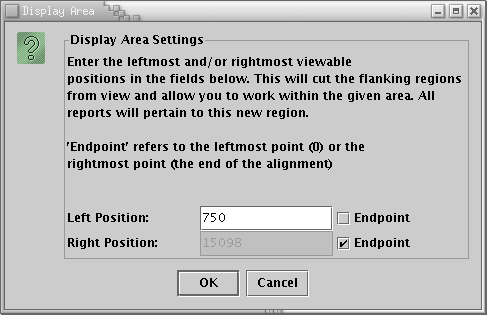

Back to Main
Back to Main
Base-By-Base provides the ability to narrow down the field of view within an alignment. If an alignment is too large, or the region of interest for a particular alignment is much smaller than the entire file, users can limit the amount of data displayed and processed in reports.
To set the display area for the current view, click the 'Set Display Area' button on the Base-By-Base Toolbar. This will bring up the following window:
Enabling the 'Endpoint' checkbox means that the view will extend to or from the end of the alignment in that direction. To set the display area to encompass a limited region within the view, not including either end, uncheck the 'Endpoint' box for both the left and right side and enter values in for each boundary.
The main side effect of setting the display area is that the scroll bar will now only scroll around within the display area. Below is a list of other side effects of changing the display area: